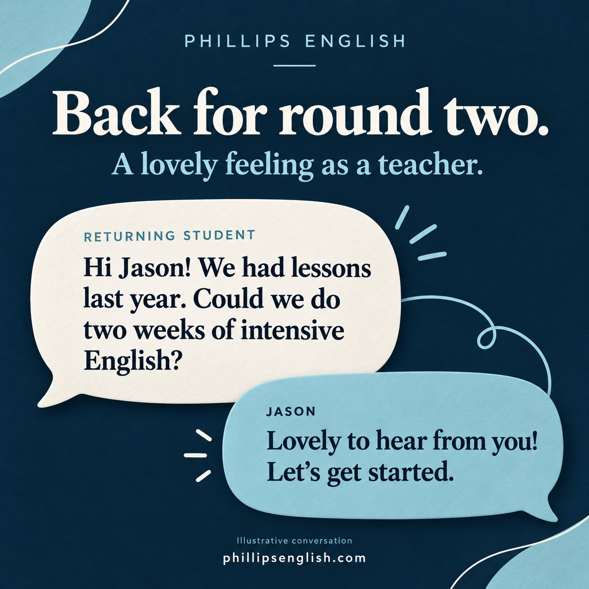

Back for round two. I’ll take that as a compliment 😉
A student I taught last year has just got in touch about two weeks of intensive English lessons. Well, that made my evening.
Teaching can be funny like that. You finish a lesson, close your laptop and hope something useful has stayed with the student. You don’t always get to see how they use it afterwards.
Then, months later, a familiar name pops up. They want to learn with you again.
When they choose you again
My first thought is usually, “Lovely to hear from you.” My second is that I must have done something right.
I take it as a sign that they found value in our time together and felt comfortable enough to come back. That’s a lovely feeling as a teacher.
It also makes me think about the small things that go into a lesson. Finding a clearer explanation. Remembering what someone struggles with. Giving them time to finish their thought. Those things matter to me.
A lesson they’re happy to return to
My lessons involve plenty of corrections. I want students to be able to make a mistake, ask a question and have another go without feeling awkward.
That means clear explanations, honest feedback and patience when the same error turns up again. Yes, that preposition we corrected last week may make another appearance. We’ll deal with it.
And we can have a laugh along the way. I want people to leave with something useful and feel happy about showing up for the next lesson.
Welcome back. What do you need now?
With a returning student, we already know a little about each other. Their goals may have changed, though. They might have a new job, a presentation coming up or simply more time to work on their English.
Before we start, I’ll ask what they want to improve now, what’s coming up and where English is getting in their way. Then we can build the lessons around that.
I’m chuffed they thought of me again. Now I get to help with the next bit.
If you’d like practical English lessons with useful feedback and a teacher who takes the time to get to know you, try a free 25 minute lesson with me at Phillips English.